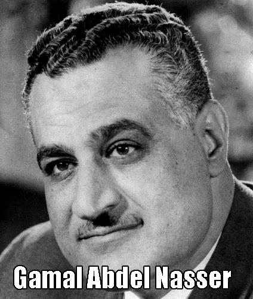
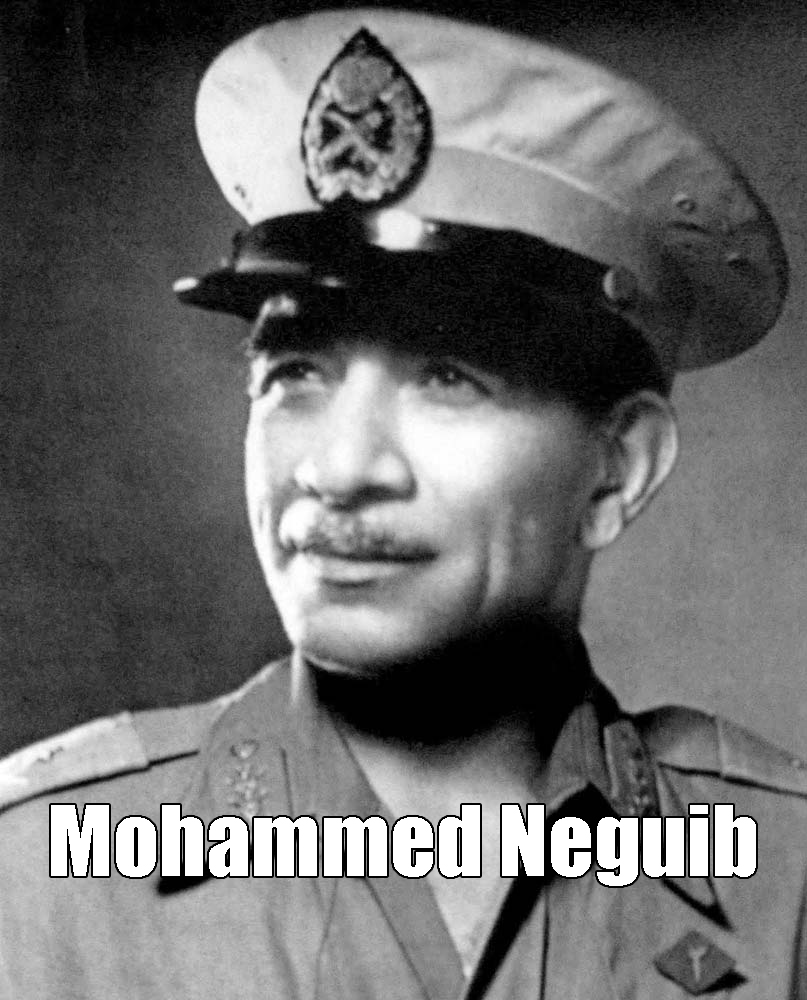

Introduction of the Egyptian Revolution of 1952:
 The revolution began on 1952, led by a group of people who worked as a team called “The Free Officers”. There were two main leaders of this revolution, they are colonel Gamal Abdel Nasser and general Mohammed Neguib.1
The purpose of this revolution was to subvert King Farouk, and end the monarchy in Egypt.
The reason that the Free Officers took a stand is because King Farouk was guilty for not protecting the country from the British troops in 1948. Therefore, he is not qualified for the ruler, and should be overthrown.4
The Free Officers gathered supporters and eventually organized a military coup that destroyed the palace, political parties, and the police which hadled to the monarchy in Egypt.37
Gamal Abdel Nasser, the leader of the Free Officers, became the prime minister of Egypt, and was elected as president in 1956.